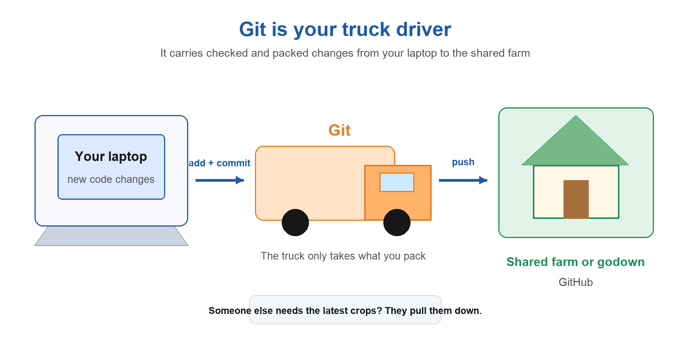
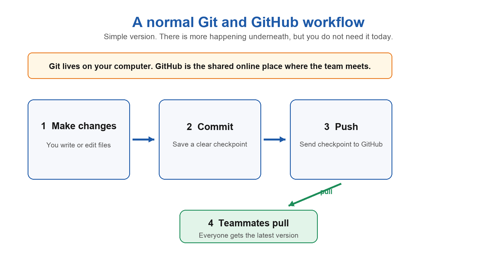

Git and GitHub for Beginners
A very normal explanation with trucks, farms, and zero unnecessary drama.
Git is not scary. It only looks scary because people introduce it with words like version control, distributed system, repository, upstream origin, and then somehow expect you to be excited.
So forget all that for a minute. Let us first talk about the problem. Because Git did not show up one day just to make developers type weird commands into a black screen. It exists because working on code gets messy very quickly when more than one human touches it.
First the very annoying problem
If you are building something alone, life is peaceful. You make a website. You change a button. You break a button. You fix the button. You deploy it. No one is touching your files. No one is renaming final_final_last_one.js behind your back.
Now put five people on the same project. One person is building login. One is changing the homepage. One is fixing a bug. One has somehow changed three files they were not supposed to touch. All of this needs to become one working project.
The old-school imaginary solution is a pendrive. You put your updated files in it. Hand it to somebody. They copy their files. Then another person does the same. Eventually one unlucky person becomes the official code mixer, trying to figure out which file is newer and why two people edited the same line.
It works for about eleven minutes. Then it becomes chaos.
And then a new developer joins. New laptop. They need the project. Or somebody gets sick and has to work from home. Or you want to see what the code looked like before yesterday's brilliant change broke everything. You need a better system.
The dream solution
What if every developer could keep a full copy of the project, make their own changes safely, save proper checkpoints, and share only the checked work with the team? What if the system could show what changed, when it changed, and who changed it?
That is the problem Git is here to solve. Git is the tool that tracks the history of your project and helps people work on it together without passing pendrives around like it is 2007.
Now think of Git as a truck driver
You have crops at your house. In our story, the crops are the code changes sitting on your laptop. You want to send the good crops to the main farm or godown, where everyone can access them. Git is your truck driver.

The truck driver does not randomly grab every crop you own and send it away. You tell them exactly what to take. That small detail is why Git feels confusing at first, but it is also why it is useful.
What the commands are actually doing
git status— Ask the truck driver what has changed at your house. What is new? What is modified? What is waiting around?git add— Pack selected crops into the truck. You are saying, yes, I want this change to be part of my next checkpoint.git commit— Seal the packed truck load and give it a tiny label, like "fixed login button" or "added dark mode." That sealed load is a commit.git push— Send your sealed truck load to the shared farm online, where your team can see it.git pull— Bring the newest crops from the shared farm down to your own house, because your teammates might have sent something while you were busy.
Commits are not just saves
A commit is a checkpoint with a message. Think of it like taking a photo of the project at one sensible moment. Not every single sneeze needs a photo. But when you finish something meaningful, take one.
Good commit messages make future-you very happy. "fixed stuff" is technically a message, but future-you will look at it and quietly lose respect for present-you. "fix checkout total when cart is empty" is much better. Now you know exactly what happened.
"fixed stuff" is a message the way a shrug is an answer. Future-you deserves better.
Okay, then what is GitHub?
Git and GitHub are related, but they are not twins. Git is the system on your computer that tracks the project history. GitHub is one popular online place where you can store that Git project and collaborate with other people.
So Git is the truck system. GitHub is the shared farm or godown. You can use Git without GitHub. You can also use other online farms, like GitLab or Bitbucket. GitHub is just the one you will hear about a lot.

How a team does not step on each other
In a team, people usually do not all work on the exact same copy at the exact same time and pray. They create branches. A branch is like taking a small side road from the main road. You can build a new feature there without disturbing the main project.
When your feature is ready, you ask to bring it back into the main road. That process is called a merge. Sometimes Git can do it automatically because everyone touched different things. Very nice. Everybody wins.
And yes, merge conflicts happen
A merge conflict happens when two people change the same part of the same file in different ways. Git looks at both versions and says, "I am not going to guess which one of you is correct. Please sort this out, humans." Honestly, fair.
It is not Git punishing you. It is Git stopping you from silently deleting someone else's work. You open the file, look at both changes, decide what the final code should be, save it, and then make a commit. Conflict solved. Mostly with snacks.
The one-minute version
| Git | Tracks your project's history on your computer. |
| GitHub | An online place to store and share a Git project. |
| Commit | A named checkpoint you can return to. |
| Push | Send your commits to GitHub. |
| Pull | Bring your team's newest commits to your computer. |
| Merge conflict | Git needs a human to choose between overlapping changes. |
Final thing
Do not try to memorize Git on day one. Use it on a tiny project. Make one file. Change it. Check status. Add it. Commit it. Push it. Pull it. Break something. Go back to an older commit. Once you have done the loop a few times, the commands stop being magic words.
Git is basically a very organised memory for your project. GitHub is the place where that memory can hang out with your team. And the truck? The truck is still doing great work.
I wrote this after explaining Git to a teammate for the third time using three different metaphors. The truck one finally stuck.